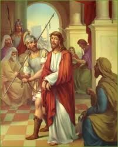

V. Nnyin imokpono Fi, O Christ inyung itoro Fi.
R. Koro amade edisana cross fo afak ererimbot.
Gospel John [ Jn. 19:12-13a;15-16]
Ke ntak emi Pilate oyom ndisana enye nyak: edi mme jew efiori ete, Edieke asanade owo emi ayak, udige ufan Ceasar; Ke adangrmi Pilate okopde iko emi,enye ada Jesus oworo, onyung osuhore etetie kei tie-ikpe, Pilate onyung odoho mme Jew ete, sese, Edidem mbufo do. Edi mmo efiori ete, Men Enyen fep, wot enye ke cross. Pilate ete mmo, nte nwot edidem mbufo ke cross? Ikpo oku eboro ete, nnyin inyene edidem efen kebede Ceasar. Ekem onye ayak Jesus ono mmo ete ekewot ke cross
Iko obong nnyin Jesus [Jn. 10:17-18]
Emi esin ete ama mi, koro ami nyakde uwem mi nduok,man mkpotongo ntak mbo nda.Owo baba kiet iboho mi uwem,edi ami ke idem mi nyak uwem mi ndouk.Mmenyene odudo udiyak uwem mi nduok, mmonyung nnyene odudu nditongo ntak uwem min da. Nkobo item emi ke ubok ete mi
EYAK NNYIN IBONG AKAM
Edema Jesus mmi ikedihe Pilate, akakam edi mme idioknkpo mmi ekebiom fi ikpe ndikpa. Mmebenge fi ke ntak isang mbufo emi ndiyanga ukpong mi ndisanga nsim uwem nsi-nsi
Edima Jesus mmama fi, nkan mmi, mmeseme ke ofuri esit mmi ke emi nduede fi. Kuyak ntongo ntak ndiangade mkpong fi, nam mi mma fi kpukpu ini, ndien nam ye ami se afo amade.
Ete Nying,
Mmokom Fi O Mary.
Itoro Enyene ete
V. O obong tuwa nnyin mbom,
R. Tuwa nnyin mbom,